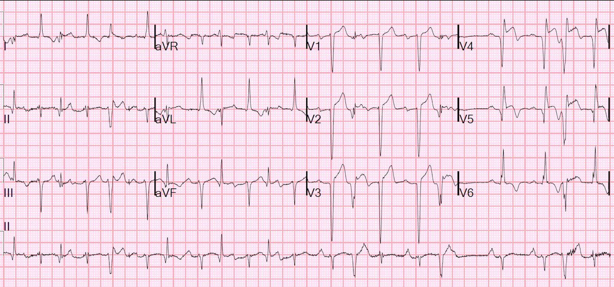
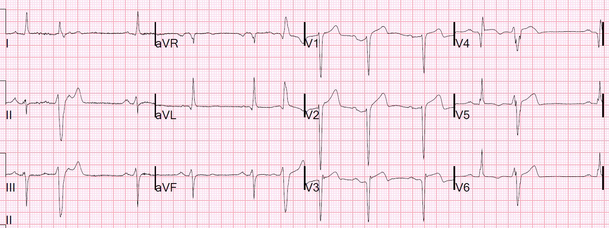
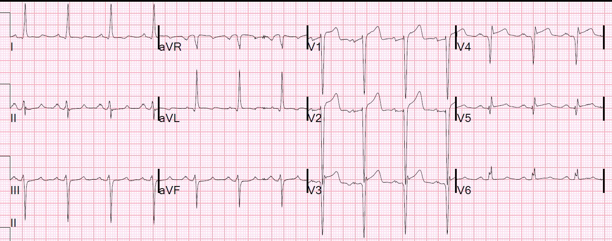
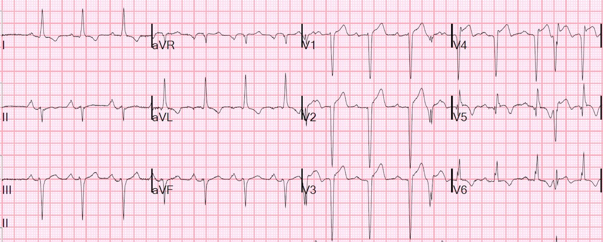
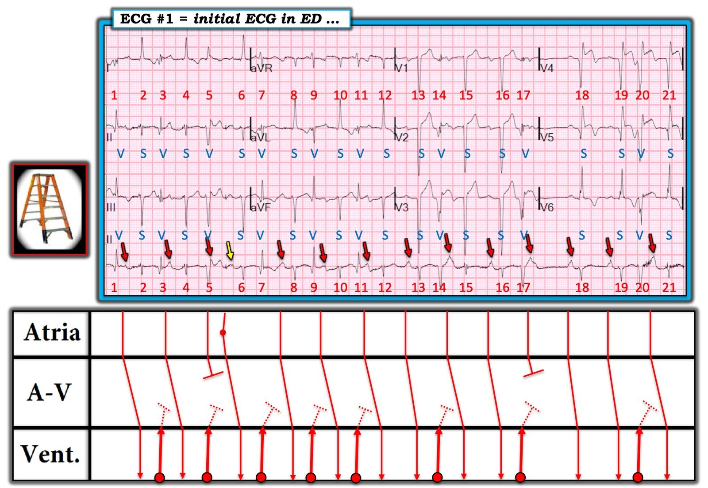

28/05/2019 — Tôi được đưa điện tâm đồ này tại khu phân loại mà không có thông tin gì
Bản dịch tiếng Việt của bài "I was handed this ECG at triage with no information" – Dr. Smith’s ECG Blog. Giữ nguyên toàn bộ 7 hình ảnh và 2 video của bản gốc.
Tôi đang ở khu phân loại (triage) thì được đưa cho điện tâm đồ này của một bệnh nhân 50 mấy tuổi.
Ông ấy không nói được tiếng Anh và tôi thực sự không biết triệu chứng của ông ấy là gì, nhưng có người đã chỉ vào ngực ông ấy, vì thế người ta mới ghi điện tâm đồ.


Tôi khá lo ngại trước đoạn ST ở V4 và V5, và đoạn ST của PVC ở V3.
V4 và V5 có sóng QR, ngoài ST chênh lên (STE), điều này gợi ý:
1. Nhồi máu cơ tim cũ với ST chênh lên tồn tại dai dẳng
2. Nhồi máu cơ tim cũ với ST chênh lên mới chồng lên, hoặc
3. Nhồi máu cơ tim bán cấp.
Cũng có ST chênh lên ở các nhát dẫn truyền bình thường của V2 và V3, nhưng đó là trong bối cảnh có sóng QS sâu, nên ít đáng lo ngại hơn.
Vì vậy tôi tìm các điện tâm đồ cũ, và tìm thấy những điện tâm đồ này:
Điện tâm đồ trước đây


Một điện tâm đồ trước đây khác


Cần biết rằng tần số tim nhanh hơn có thể làm ST chênh lên của phình thất trái trở nên rõ rệt hơn.
Tôi nghi ngờ rằng tất cả những thay đổi này đều là cũ.
Chúng tôi đã làm siêu âm tim tại giường:
Mặt cắt 4 buồng từ mỏm
Phình mỏm tim lớn
Mặt cắt trục dọc cạnh ức
Cũng cho thấy phình mỏm tim
Chúng tôi phát hiện ông ấy có tiền sử tắc LAD và đặt stent thân chung động mạch vành trái, bệnh cơ tim thiếu máu cục bộ, từng ngừng tim do rung thất (VFib), và có máy khử rung tim cấy được (ICD) cùng máy tạo nhịp.
Siêu âm tim trước đây quả thực đã cho thấy phình thất trái.
Sau đó người phiên dịch đến và xác nhận rằng ông ấy không đau ngực nhưng đã có một cơn ngất.
Chúng tôi ghi một điện tâm đồ tiếp theo:


Tôi quyết định rằng đây là nhồi máu cơ tim cũ với ST chênh lên tồn tại dai dẳng (phình thất trái) và chúng tôi đã chỉ định siêu âm tim chính thức, kết quả xác nhận không có rối loạn vận động thành mới. Bệnh nhân được loại trừ nhồi máu cơ tim.
Ông ấy được nhập viện và phát hiện có các loạt VT, điều này giải thích cho cơn ngất. Dù vậy tôi không chắc vì sao ICD không phóng sốc.
Điều gì sẽ xảy ra nếu chúng ta áp dụng quy tắc phân biệt STEMI cấp với phình thất trái thành trước?
Đây là quy tắc:
Nếu có một chuyển đạo trong V1-V4 có tỷ số T/QRS lớn hơn 0.36, thì đó là STEMI cấp, vì STEMI có sóng T dương lớn.
Vấn đề là, khi tôi thực hiện các nghiên cứu này, chúng tôi chỉ xét phần dương của sóng T, nhưng tôi tin rằng quy tắc vẫn đúng với toàn bộ biên độ sóng T, cả phần dương lẫn phần âm.
Với điện tâm đồ 1, ta có:
V1: 3/15 = 0.20
V2: 5.5/20 = 0.275
V3: 7.5/25 = 0.30
V4 (chỉ phần dương của sóng T): 3.5/19.5 = 0.18
V4: (dùng toàn bộ biên độ sóng T) 5.5/19.5 = 0.28
Tất cả đều nhỏ hơn 0.36, vì vậy quy tắc đã chính xác trong ca này.
Những điểm cần học:
1. Phình thất trái là một trong những nguyên nhân thường gặp nhất của kích hoạt phòng thông tim (cath lab) không phù hợp.
2. Điều quan trọng là phải nói chuyện với bệnh nhân không nói tiếng Anh thông qua người phiên dịch
Khi có sóng Q:
3. Điều quan trọng là phải tìm các điện tâm đồ cũ
4. Điều quan trọng là phải nhìn trực tiếp vào tim
5. Điều quan trọng là phải xem hồ sơ cũ
6. Điều quan trọng là phải xác định xem biên độ sóng T có lớn hay không, như trong STEMI cấp. Công thức giúp bạn việc này.
Cuối cùng, công thức có thể cho kết quả âm tính giả trong STEMI bán cấp, vì theo thời gian, biên độ sóng T trong STEMI giảm dần!!

===================================
Bình luận của KEN GRAUER, MD (28/5/2019):
===================================
Ca bệnh đầy thử thách vì nhiều lý do! Dr. Smith đưa ra phần tường thuật XUẤT SẮC từng bước khi ông đánh giá điện tâm đồ ban đầu về khả năng có một biến cố tim cấp. Các Điểm cần học của ông thể hiện những thông điệp “cần nhớ” then chốt, sẽ giúp ích nhiều cho chúng ta khi đánh giá những bản ghi đáng lo ngại khác, nhất là khi thông tin lâm sàng còn hạn chế vào lúc bệnh nhân đến viện.
- Tôi bị cuốn hút bởi nhịp trên điện tâm đồ ban đầu — mà tôi đã tái hiện lại, cùng với đề xuất của tôi về Giản đồ bậc thang (laddergram) trong Hình 1.
- Việc đánh giá nhịp tim trên bản ghi ban đầu này không chỉ là một bài tập học thuật — vì chúng ta cần phân biệt được giữa các nhát dẫn truyền từ xoang và các nhát không phải từ xoang để đánh giá tối ưu hình thái QRS và các thay đổi sóng ST-T nhằm phát hiện thiếu máu cục bộ cấp tiềm ẩn.
Những đặc điểm Thú vị của Nhịp này — Khi lần đầu nhìn bản ghi này, tôi hoàn toàn không chắc chắn về những gì đang diễn ra trên bản ghi.
- Tôi thấy một số sóng P trên dải nhịp chuyển đạo II dài — nhưng tôi hoàn toàn không chắc liệu có một nhịp nhĩ đều ở nền hay không …
- Khoảng PR dường như thay đổi ở một số chỗ — và ít nhất 1 sóng P dường như không được dẫn truyền …
- Nhìn vào dải nhịp chuyển đạo II dài — dường như có ít nhất 4 hình thái QRS khác nhau …
- Những nhát mà tôi cho là có lẽ là PVC lại không phải lúc nào cũng rộng …


=====================
Cách Tiếp cận của tôi để Đánh giá Nhịp này: Điều làm việc đánh giá nhịp trên điện tâm đồ ở Hình 1 thêm phức tạp là có nhiễu đường nền đáng kể ở nhiều phần của bản ghi này. LƯU Ý: Việc dùng Compa đo (calipers) là thiết yếu để diễn giải nhịp trên bản ghi này
- Tôi bắt đầu bằng cách tập trung vào dải nhịp chuyển đạo II dài ở cuối bản ghi. Tôi thích bắt đầu bằng việc tìm một phần của bản ghi mà tôi chắc chắn 100%. Có lẽ điều duy nhất mà ban đầu tôi chắc chắn trên bản ghi này là các nhát #18 và 19 là nhát dẫn truyền từ xoang với sóng P dương nổi bật (cao và nhọn) ở chuyển đạo II, kèm khoảng PR bình thường.
- Quan sát phần còn lại của dải nhịp chuyển đạo II dài — tôi thấy các nhát #13 và 16 cũng là nhát dẫn truyền từ xoang, mỗi nhát đều đi sau cùng một khoảng PR như khoảng PR đi trước các nhát #18 và 19.
- Đến đây — tôi chưa chắc về hoạt động nhĩ khác. Việc dùng compa đo đã ngay lập tức giải quyết sự không chắc chắn này. Đặt compa chính xác bằng đúng khoảng P-P duy nhất mà tôi chắc chắn (tức là khoảng cách giữa các sóng P đi trước nhát #18 và #19) — tôi đã có thể “dò bước” hoạt động sóng P xoang đều đặn trên gần như toàn bộ bản ghi (các mũi tên ĐỎ)! Điều thực sự hữu ích là các sóng P xoang đã biết mà chúng ta thấy (tức là đi trước các nhát #13, 16, 18 và 19) rất nhọn — vì điều này giúp dễ nhận ra nhiều sóng P còn lại bị ẩn một phần trong phức bộ QRS hoặc trong sóng ST-T. Chỗ gián đoạn duy nhất của khoảng P-P nhất quán này là sóng P đi trước nhát #6 — mà tôi cho rằng, do xuất hiện sớm và có hình dạng tròn hơn, nhiều khả năng là một PAC (mũi tên VÀNG).
- Chấp nhận có sự thay đổi nhẹ về hình thái QRS, vốn thường gặp ở bệnh nhân cấp tính (thường cử động trên giường), nhất là khi có nhiều nhiễu đường nền như trong Hình 1 — tôi cho rằng các nhát hẹp #2, 4, 8, 10, 12, 13, 15, 16, 18, 19 và 21 đều là phức bộ QRS dẫn truyền từ xoang (được đánh dấu bằng chữ “S” màu xanh trong Hình 1).
- Với các nhát còn lại — tôi dùng các chuyển đạo ghi đồng thời trên điện tâm đồ 12 chuyển đạo, cùng với dải nhịp chuyển đạo II dài để đánh giá hình thái QRS. Lại bắt đầu với những nhát mà tôi khá chắc chắn — tôi cho rằng các nhát #14 và 17 gần như chắc chắn là PVC — vì ở chuyển đạo V3 ghi đồng thời các phức bộ QRS này rất rộng và có hình dạng khác với các nhát dẫn truyền từ xoang ở chuyển đạo này. LƯU Ý: Các nhát #14 và 17 không trông rộng ở chuyển đạo V1 ghi đồng thời — có lẽ vì phần lớn phức bộ QRS ở chuyển đạo V1 nằm trên đường nền (đó là lý do càng xem nhiều chuyển đạo thì càng tốt cho việc đánh giá độ rộng và hình thái QRS! ).
- Vì nhát #20 trên dải nhịp chuyển đạo II dài trông giống hệt các nhát #14 và 17 — nhát #20 hẳn cũng là một PVC (và nhát này quả thật trông rất khác với các nhát dẫn truyền từ xoang ở các chuyển đạo V5 và V6 ghi đồng thời).
- Nhát #5 trông rất rộng và khác biệt ở chuyển đạo II dài. Nó cũng là một PVC.
- Nhưng còn với các nhát #1, 3, 7, 9 và 11 thì sao? Các nhát này không trông rộng lắm ở cả dải nhịp chuyển đạo II dài lẫn các chuyển đạo ghi đồng thời phía trên dải nhịp này. Tôi tin rằng các nhát này cũng là PVC — vì không có câu trả lời nào khác hợp lý với tôi. Với nhịp nhĩ đều đã được compa chứng minh — các nhát #1,3,7,9 và 11 không thể là PAC kèm dẫn truyền lệch hướng (vì như vậy sẽ làm xáo trộn nhịp xoang đều ở nền). Hình thái QRS của các nhát #1,3,7,9 và 11 không gợi ý bất kỳ dạng dẫn truyền lệch hướng nào — và khoảng ghép của các nhát này (tức là khoảng cách từ PVC đến QRS dẫn truyền từ xoang đi trước) hầu như bằng khoảng ghép của các nhát #14, 17 và 20 mà chúng ta đã chắc chắn là PVC.
- LƯU Ý: Điều này buộc chúng ta phải giải thích VÌ SAO nếu các nhát #1,3,7,9 và 11 là PVC có cùng khoảng ghép với các PVC #14,17 và 20 — Vì sao các nhát này lại có 2 hình thái QRS khác nhau? GIẢ THUYẾT CỦA TÔI: PVC có thể có nguồn gốc tương tự nhưng vị trí thoát ra khỏi vòng của chúng trong tâm thất lại khác nhau — khi đó khoảng ghép có thể giống nhau, nhưng hình thái QRS của các PVC có vị trí khởi phát tương tự này có thể khác nhau … Dù vậy, tôi thừa nhận rằng tôi không thể chứng minh giả thuyết của mình.
- Vượt ra ngoài phần cốt lõi: Lưu ý rằng khoảng PR đi trước các nhát #2, 4, 8, 10, 12 và 15 dài hơn khoảng PR đi trước các nhát dẫn truyền từ xoang #13, 16, 18 và 19. Lý do là “dẫn truyền ẩn” (concealed conduction) — tức là giả định rằng các PVC đi trước mỗi nhát này dẫn truyền ngược dòng đủ xa để làm chậm dẫn truyền xuôi dòng của nhát xoang kế tiếp (các đường chấm trên giản đồ bậc thang, thể hiện sự lan truyền từ các PVC này vào Tầng Nút AV).
- ĐIỀU CỐT LÕI: Tôi diễn giải nhịp trong Hình 1 là nhịp xoang kèm PVC cực kỳ thường xuyên và một PAC. Các PVC là đa dạng (multiform) — vì hình thái của chúng không phải lúc nào cũng giống nhau. Sóng P xuất hiện ngay cuối phức bộ QRS của nhát #5 không được dẫn truyền — vì nó rơi vào thời kỳ trơ tuyệt đối. Sóng P xuất hiện sớm trong đoạn ST (ngay sau nhát #17) cũng không được dẫn truyền vì cùng lý do đó. Khoảng PR kéo dài nhẹ thấy sau nhiều PVC là do hiện tượng “dẫn truyền ẩn” — nhưng không có bằng chứng nào của blốc AV! Giờ đây khi đã biết nhát nào dẫn truyền từ xoang (được đánh dấu bằng chữ “S”) và nhát nào là nhát thất (được đánh dấu bằng chữ “V”) — chúng ta có thể dễ dàng theo dõi lập luận của Dr. Smith về lý do vì sao đây không phải là STEMI cấp.
Chúng tôi xin CẢM ƠN Dr. Smith đã trình bày ca bệnh hấp dẫn này!
====================
ĐỂ TÌM HIỂU THÊM:
- Về việc sử dụng Giản đồ bậc thang — BẤM VÀO ĐÂY .
- Về dẫn truyền ẩn — BẤM VÀO ĐÂY.